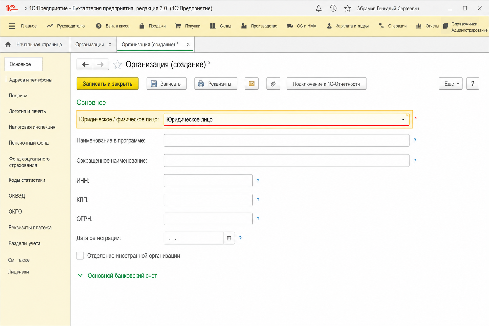
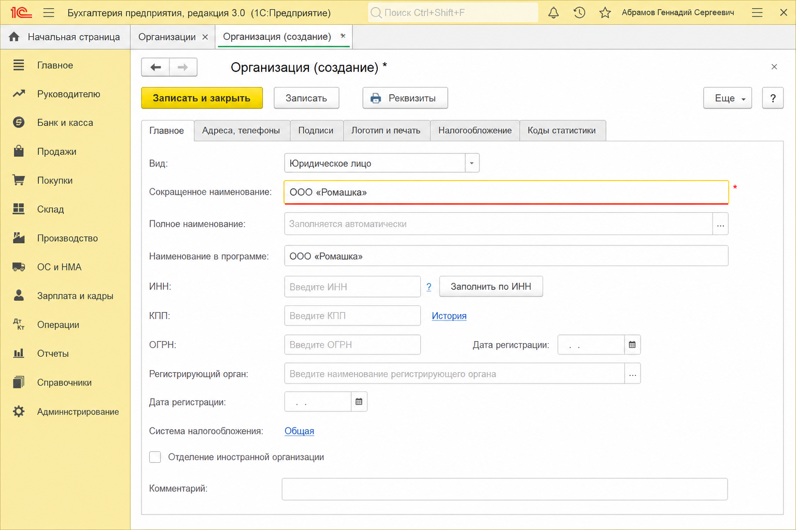
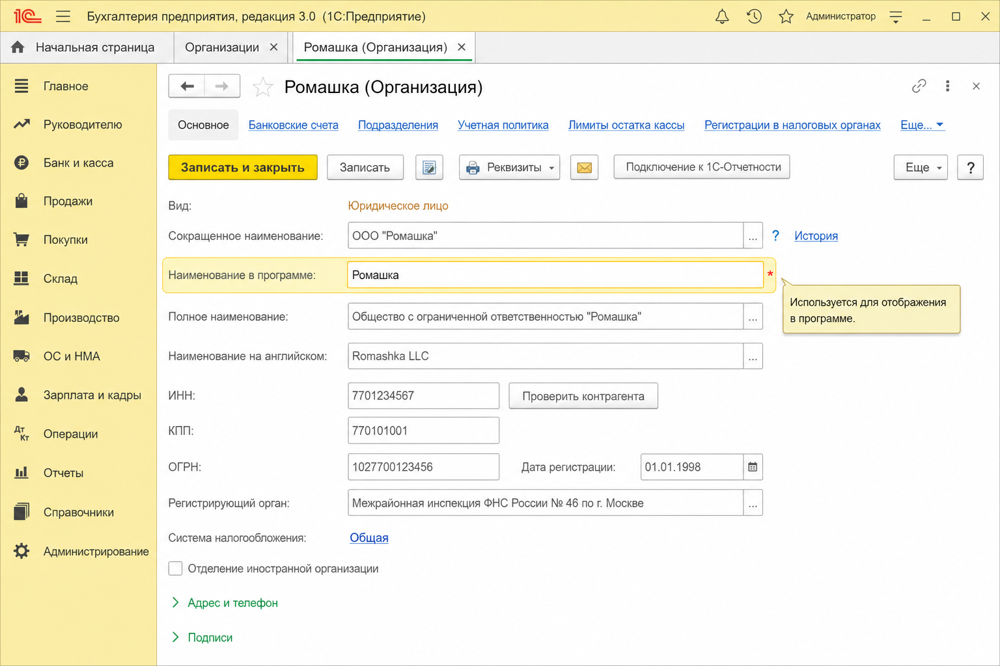
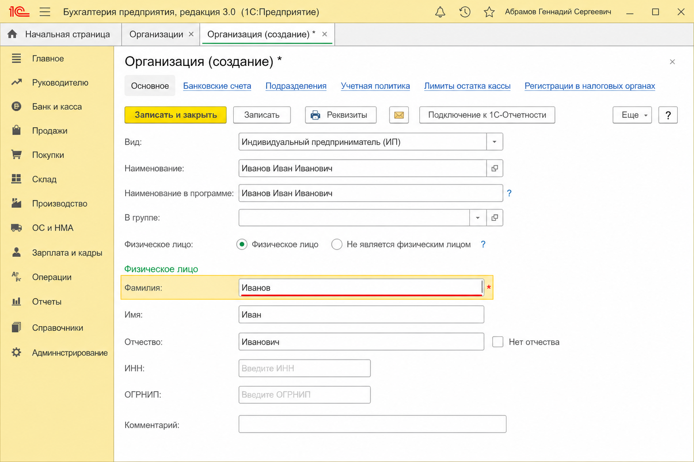
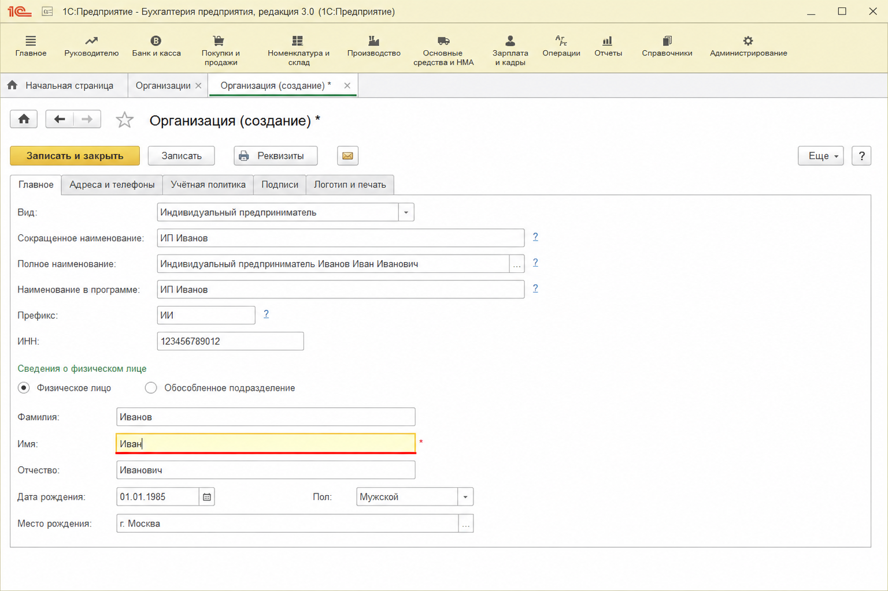
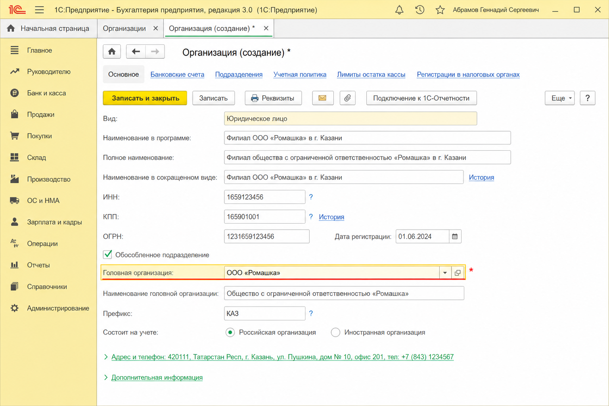

1С: Бухгалтерия 3
Заполнение сведений о НАС
Справочник «Организации» — это сведения о вашей компании (или ИП). Ниже — обязательные реквизиты формы: на каждом шаге выделено поле, которое нужно заполнить.
Путь в программе: Справочники → Организации → создать или открыть карточку. Обязательность части полей зависит от типа: юрлицо, ИП или обособленное подразделение.
-
1. Юридическое / физическое лицо
Всегда обязателен. Выберите тип: юридическое лицо или физическое лицо (ИП).

-
2. Сокращённое наименование
Обязателен для юридического лица. Пример: ООО «Ромашка».

-
3. Наименование в программе
Как организация отображается в списках и документах. Часто заполняется автоматически по сокращённому наименованию, но поле обязательное.

-
4. Фамилия (для ИП)
Обязательна, если выбран тип физическое лицо.

-
5. Имя (для ИП)
Обязательно вместе с фамилией для ИП / физического лица.

-
6. Головная организация
Обязательна, если это обособленное подразделение (филиал). Укажите головную организацию, к которой относится филиал.

Кратко
Юрлицо: тип + сокращённое наименование (+ наименование в программе). ИП: тип + фамилия + имя. Филиал: дополнительно головная организация.